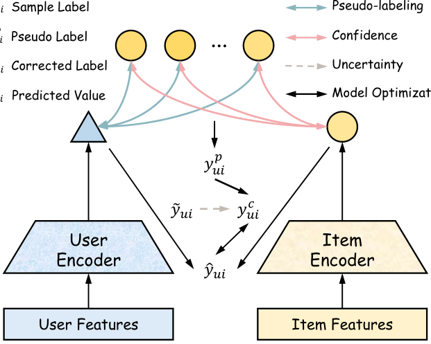

Denoising Implicit Feedback for Cold-start Recommendation (面向冷启动推荐的隐式反馈去噪)
- 会议/期刊: KDD 2026 (ADS Track)
- 作者与机构: Gaode Chen, Shicheng Wang, Shikun Li (HKBU), Rui Huang, Ruina Sun, Yinjie Jiang, Jun Zhang 等 — 快手科技 / 香港浸会大学 / 中科院信工所 / 北大 / 南大
- 推荐链路定位: 召回（双塔 + ANN，方法本身 model-agnostic）
- 研究方向: 冷启动与长尾推荐 / 自监督与交互去噪
- 论文原文: https://arxiv.org/abs/2606.19658v1
- 开源代码: https://github.com/HKUDS/MMSSL（数据集仓库）
TL;DR (1分钟核心速览)
本文指出一个被忽视的事实：冷启动物品比热物品更容易产生噪声隐式反馈（快手实测：clickbait 高分档冷视频占比高出 37.7%；尾部三位冷视频占比高出 28.3%）。而现有"高 loss 即噪声"的去噪范式在冷启动下彻底失效——冷物品天然 loss 大、预测分低、梯度大。DIF 提出：用内容相似热物品的协同表征为用户-冷物品样本生成 k 个伪标签，按内容相似度做置信加权聚合，再用相对熵 × 冷启动状态估计样本不确定性，自适应地把伪标签混入原标签做软标签纠正。在 Amazon-Sports/Baby、TikTok 三数据集上以 NeuMF/LightGCN/SimGCL 三种骨干验证，冷物品 Recall@20 最高提升约 89%（NeuMF-Sports 0.00244→0.00461），并在快手十亿用户级 A/B 中有效观看 +2.33%、完播 +2.69%。
Background & Motivation (背景与核心矛盾)
- 主流范式: 隐式反馈去噪分两支——样本选择（丢弃高 loss 样本）与样本重加权（降低高 loss 样本权重），二者均以 loss 值、预测分、梯度等模型自身信号作为噪声判据。
- 前人局限: ①冷物品表征未充分训练，天然呈现大 loss / 低预测分 / 大梯度，与"噪声样本"的启发式特征完全混淆，判据失效；②冷物品正反馈本就稀少，样本选择会进一步丢弃宝贵的正信号，加剧马太效应；③这些方法难以嵌入工业流式训练管线。
- 核心洞察 (Key Insight): 用户对内容的兴趣是稳定的，因此"用户是否会对某冷物品感兴趣"可由内容相似的热物品交互来推断；热物品的协同表征已被充分训练，是可靠的信息源。
- 本文切入点: 把去噪从"基于模型信号的样本筛选"转为"基于内容近邻的标签纠正"，且纠正强度由样本级不确定性自适应控制。
Method (核心方法设计)
1. 整体框架 (Overall Architecture)
对样本流中每个 \((u,i,\tilde y_{ui})\)：先经多模态推理服务取冷物品 \(i\) 的内容向量，向 item-to-item ANN 服务检索 top-\(k\) 内容相似热物品及其相似度 \(S_i\)；再由 Embedding 服务实时取这些热物品的协同表征 \(E_i\)，与用户兴趣表征 \(e_u\) 内积得到 \(k\) 个伪标签；置信加权聚合为单一伪标签 \(y^p_{ui}\)；同时用相对熵与冷启动状态估计样本不确定性 \(t_{ui}\)，换算权重 \(w\) 后将 \(y^p_{ui}\) 与原标签 \(\tilde y_{ui}\) 混合为软标签 \(y^c_{ui}\)，最后以交叉熵训练双塔。全流程在近线流式系统中增量更新。
flowchart TD
A["样本流 (u, i, ỹ)"] --> B["多模态内容向量 + item-to-item ANN 检索 top-k 热物品"]
B --> C["热物品协同表征 E_i × 用户表征 e_u → k 个伪标签"]
C --> D["内容相似度置信加权聚合 → y^p"]
A --> E["相对熵 r × 冷启动状态 γ → 不确定性 t"]
D --> F["软标签纠正 y^c = w·y^p + (1-w)·ỹ"]
E --> F
F --> G["交叉熵训练双塔 / ANN 召回"]
2. 关键设计拆解 (Key Designs)
-
内容近邻伪标签生成 (Pseudo-labeling via Content-Similar Warm Items)：痛点是用冷物品自身预测做伪标签不可信。改为取 top-\(k\) 内容相似热物品的协同表征与用户表征内积，保持与样本标签同构（同为内积打分）： $\(\big[y^p_{ui,1},\dots,y^p_{ui,k}\big]=e_u\cdot\big[e^1_i,e^2_i,\dots,e^k_i\big]\)$ 直觉：热物品表征已被充分训练，其与用户的交互倾向可迁移到内容同质的冷物品上。作者进一步用 kNN 非参回归理论证明：只要热物品池 \(N_{warm}\) 足够大，伪标签误差上界为 \(\mathcal{O}\big(L(k/N_{warm})^{\alpha/d}\big)+\mathcal{O}(\sigma'_u/\sqrt{k})\)，无需强相似性假设即可逼近真标签。
-
置信加权聚合 (Confidence Modeling)：不同相似度应体现不同引导强度，故以 softmax 温度加权替代均值池化： $\(c^j_i=\frac{\exp(s^j_i/\tau)}{\sum_{z=1}^{k}\exp(s^z_i/\tau)},\quad y^p_{ui}=\sum_{j=1}^{k}c^j_i\,y^p_{ui,j}\)$ 线上观测相似度普遍 >0.9，\(\tau=0.3\) 用于放大区分度。
-
不确定性估计与软标签纠正 (Uncertainty-Guided Correction)：纠正过度会污染热物品训练。以相对熵 \(r_{ui}=-\tilde y\log\hat y-(1-\tilde y)\log(1-\hat y)\) 度量预测失配，以冷启动状态 \(\gamma_i=e^{-\alpha g_i}\)（\(g_i\) 为交互数）度量冷物品先验噪声倾向，二者相乘得 \(t_{ui}=r_{ui}\gamma_i\)，再归一化为 \(w=t/(t+1)\)，最终 \(y^c_{ui}=w\,y^p_{ui}+(1-w)\tilde y_{ui}\)。理论侧 Theorem 2.2 证明 MSE 最优权重恰为 \(w^*=\lambda/(\lambda+1)\)（\(\lambda\) 为噪声比），与式 (7) 形式一致，\(t_{ui}\) 即该噪声比的有效估计量。训练目标为交叉熵 \(\mathcal{L}=-\sum y^c\log\hat y+(1-y^c)\log(1-\hat y)\)；负采样沿用双塔 in-batch 范式，无额外负采样开销；推理时仅用户塔实时前向 + ANN 检索，伪标签仅在训练期生效，在线零额外延迟。
Experimental Setup & Evaluation Protocol (实验设置与评估协议)
- 数据集与预处理（多模态特征：视觉 V / 声学 A / 文本 T）：
| 数据集 | #Users | #Items | #Interactions | 稀疏度 | 特征说明 |
|---|---|---|---|---|---|
| Amazon-Sports | 35,598 | 18,357 | 256,308 | 99.961% | V 4096-d + T 1024-d (Sentence-BERT) |
| Amazon-Baby | 19,445 | 7,050 | 139,110 | 99.899% | V 4096-d + T 1024-d |
| TikTok | 9,319 | 6,710 | 59,541 | 99.904% | V/A 128-d + T 768-d |
- 数据划分与防穿越: 按每用户交互 8:1:1 比例随机划分 train/valid/test；冷/热物品按各数据集交互数第 20 百分位切分（非时间切分，存在轻度穿越风险）。
- 排名评测协议: 报告 Precision@20 / Recall@20 / NDCG@20，测试集全体用户平均；未明确声明 Full-Ranking，从指标量级（Recall@20 ~1e-3）推断为采样候选排序。
- 对比基线与超参: 三类 model-agnostic 去噪/冷启动基线 DECL、RINCE、MWUF + Normal 训练，分别嫁接 NeuMF / LightGCN / SimGCL 三种骨干；\(d=64\)，Adam，batch=1024，lr=1e-3，\(k=5\)，\(\tau=0.3\)。
Key Experimental Results (实验关键数据)
1. 主实验对比 (Main Results)
以 LightGCN 与 SimGCL 骨干的 Recall@20 / NDCG@20 为代表（完整表含 NeuMF 与 Warm/Overall 分桶）：
| 骨干 | 方法 | Sports R@20 | Sports N@20 | Baby R@20 | Baby N@20 | TikTok R@20 | TikTok N@20 |
|---|---|---|---|---|---|---|---|
| LightGCN (Cold) | Normal | 0.00191 | 0.00192 | 0.00143 | 0.00122 | 0.00106 | 0.00026 |
| RINCE | 0.00266 | 0.00294 | 0.00258 | 0.00248 | 0.00415 | 0.00125 | |
| DECL | 0.00277 | 0.00306 | 0.00179 | 0.00168 | 0.00231 | 0.00065 | |
| MWUF | 0.00253 | 0.00222 | 0.00186 | 0.00161 | 0.00155 | 0.00050 | |
| DIF | 0.00325 | 0.00341 | 0.00303 | 0.00261 | 0.00518 | 0.00117 | |
| SimGCL (Cold) | Normal | 0.00218 | 0.00210 | 0.00180 | 0.00184 | 0.00155 | 0.00040 |
| RINCE | 0.00293 | 0.00312 | 0.00285 | 0.00289 | 0.00466 | 0.00101 | |
| DECL | 0.00317 | 0.00361 | 0.00219 | 0.00184 | 0.00259 | 0.00072 | |
| MWUF | 0.00319 | 0.00270 | 0.00236 | 0.00227 | 0.00207 | 0.00060 | |
| DIF | 0.00347 | 0.00379 | 0.00350 | 0.00356 | 0.00570 | 0.00154 | |
| SimGCL (Overall) | RINCE | 0.06266 | 0.02837 | 0.07165 | 0.03178 | 0.08483 | 0.03583 |
| DECL | 0.06862 | 0.03156 | 0.04751 | 0.02007 | 0.06819 | 0.03208 | |
| DIF | 0.07287 | 0.03392 | 0.07767 | 0.03405 | 0.09005 | 0.03993 |
冷物品上 DIF 相对最强基线提升：Sports R@20 +17.3%（vs DECL）、Baby +17.4%（vs RINCE）、TikTok +24.8%（vs RINCE）；NeuMF-Sports 冷物品 R@20 相对 Normal 提升 +88.9%。
2. 消融实验 (Ablation Study)
LightGCN 骨干，Recall@20：
| 数据集 | 变体 | Cold | Warm | Overall |
|---|---|---|---|---|
| TikTok | w/o CM（均值聚合） | 0.00311 | 0.10857 | 0.07537 |
| w/o RE（去相对熵） | 0.00152 | 0.12214 | 0.08385 | |
| w/o CS（去冷启动状态） | 0.00104 | 0.10619 | 0.07308 | |
| DIF | 0.00518 | 0.12667 | 0.08842 | |
| Sports | w/o CM | 0.00293 | 0.09804 | 0.06259 |
| w/o RE | 0.00278 | 0.09685 | 0.06182 | |
| w/o CS | 0.00264 | 0.09318 | 0.05954 | |
| DIF | 0.00325 | 0.10862 | 0.06934 |
3. 关键实验发现 (Key Findings)
- 冷启动状态 \(\gamma_i\) 是最大贡献项：去掉 CS 后 TikTok 冷物品 R@20 从 0.00518 崩至 0.00104（−80%），甚至低于 Normal 训练，说明"按交互数门控纠正强度"是防止冷物品被过度纠正/热物品被污染的核心闸门。
- 相对熵主要保护冷物品而非热物品：w/o RE 使冷物品降至 0.00152（−71%），但热物品反而升至 0.12214——因为热物品表征已收敛、高相对熵样本稀少，去掉 RE 相当于对热物品少做干预，印证了 \(t_{ui}=r_{ui}\gamma_i\) 的乘积设计天然实现"冷物品强纠正、热物品弱扰动"。
- 置信建模增益最小但方向一致：w/o CM 仅使冷物品从 0.00518 降至 0.00311，作者归因于现有多模态表征质量已高、检索到的热邻居相似度普遍 >0.9，softmax 加权的边际收益有限——这也提示该模块在内容表征较弱场景下价值会更大。
- 噪声鲁棒性：在 20%–80% 随机噪声注入下，DIF 在 Amazon-Baby/Sports × NeuMF/LightGCN 四组设置中全程领先 DECL/RINCE/MWUF，且噪声比越高优势越明显（图 3）。
- 线上 A/B（快手，2025.01.12–01.16，亿级用户）：有效观看 +2.327%、观看时长 +2.921%、长播 +2.688%、点赞 +2.921%、评论 +2.435%、关注 +2.790%、分享 +0.876%，仅短播 −2.030%（长播上升、短播下降，符合"去 clickbait 噪声"的预期方向）。
Highlights, Limitations & Rating (亮点、对比与审稿评价)
- 与代表作对比 (vs. Prior Work): DECL/RINCE 依赖模型自身 loss/预测分做样本筛选或对比鲁棒损失，在冷物品上判据与噪声特征混淆；MWUF 用元网络在热特征空间生成冷物品初始表征，但只解决初始化、不处理标签噪声。DIF 的本质差异是把信息源从"模型对冷物品的预测"换成"模型对内容近邻热物品的预测"，并用不确定性控制纠正幅度，同时给出可落地的流式工程方案。
- 可迁移亮点: ①"用近邻已收敛表征为未收敛样本生成伪标签"可迁移到新用户冷启动、跨域新场景冷启；②\(t=r\cdot\gamma\) 的"失配度 × 成熟度"乘积式不确定性门控，可直接复用到任何需要"只对欠训练样本做激进干预"的场景（如蒸馏、自训练）。
- 审稿级局限批判: ①冷/热划分按交互数第 20 百分位而非时间切分，且 8:1:1 随机划分存在未来交互泄漏，冷启动评估的严格性弱于 Leave-One-Out 或全局时间戳切分；②伪标签质量强依赖多模态内容表征与 item-to-item ANN 服务的覆盖率，论文未报告相似度分布下界与检索失败率，也未给出 \(k\)、\(\tau\)、\(\alpha\) 的敏感性曲线；③TikTok 冷物品 NDCG 未达最优（0.00117 vs RINCE 0.00125），作者自承方法偏召回优化而非排序。
- 四维评分: 创新性 ⭐⭐⭐⭐ | 实验扎实度 ⭐⭐⭐⭐⭐ | 方法清晰度 ⭐⭐⭐⭐⭐ | 落地价值 ⭐⭐⭐⭐⭐